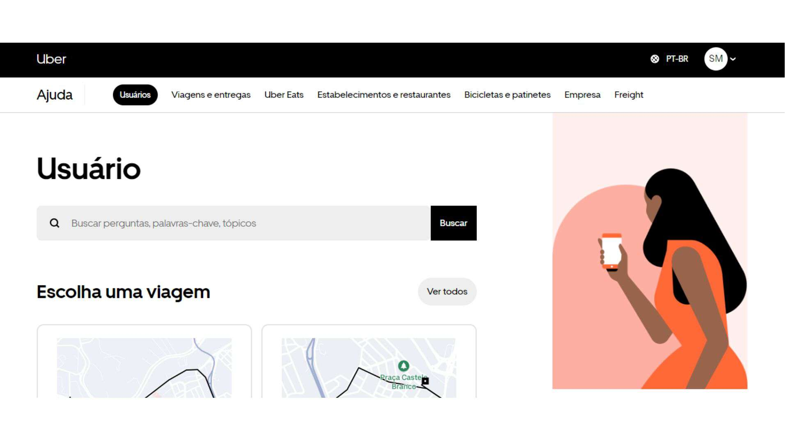
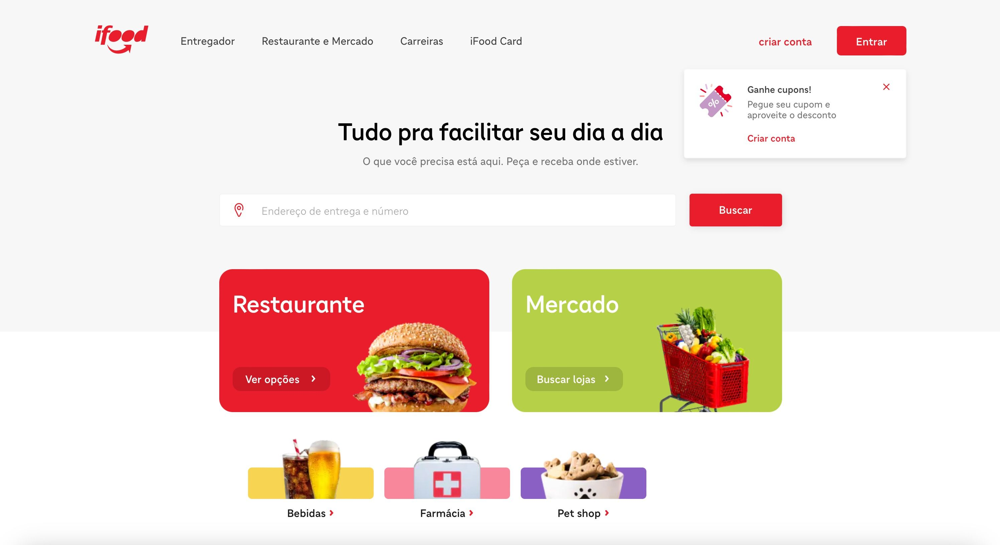
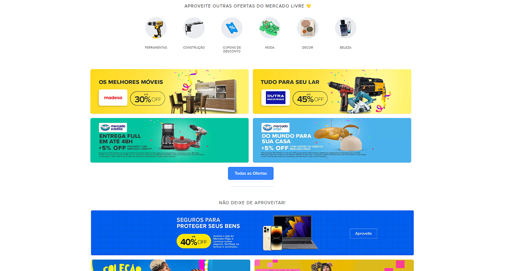

Trabalho pessoal do warlley

Interface do site da Uber
Warlley, um talentoso desenvolvedor brasileiro, é lembrado por ter criado a primeira versão do site da Uber. Seu trabalho inicial foi fundamental para estabelecer a presença digital de uma das maiores plataformas de transporte do mundo.
Trabalho pessoal do Bruno

Interface do site do Ifood
Bruno foi fundamental para a arquitetura de backend que garante a transição de status dos pedidos, peça-chave para a interface de entrega fluida que vemos no app do iFood.
Trabalho pessoal do Alessandro

Interface do site do Ifood
Alessandro, um desenvolvedor-chave, foi o responsável por desenhar a interface de demonstração de produtos no app Mercado Livre. Seu trabalho foi essencial para otimizar a experiência do usuário ao explorar e visualizar ofertas na plataforma.
Trabalho pessoal do Luis

Interface do site do Ifood
Luís, um engenheiro backend de talento, foi crucial no desenvolvimento da infraestrutura de login do Facebook. Seu trabalho garantiu que a autenticação de milhões de usuários fosse segura e instantânea na plataforma.